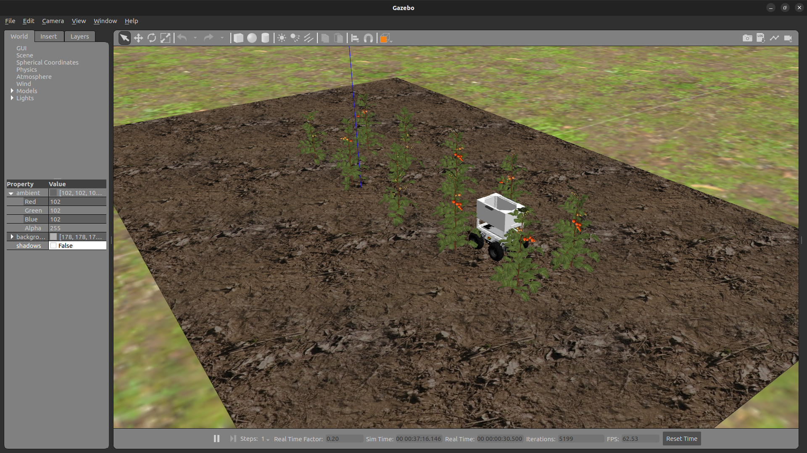

Task 2: Crop Yield Estimation¶

General Description¶
According to the United Nations, the world population is predicted to rise to 8.5 billion by 2030, with Africa being the fastest growing continent. This projected population growth necessitates the urgency for food security. Accurately estimating crop yields are an essential facet in the pursuit for food security and autonomous agricultural robots are employed in this undertaking.
For this task, the PARC robot is autonomously driven through two rows of tomato plants and teams are to develop software to estimate the yield of the tomato field by making use of the robot’s RGB cameras and computer vision.
Task Guidelines¶
Launching the Task¶
In a new terminal, run the following launch file to bring up the robot in Gazebo and RViz:
You should see the display below in Gazebo and RViz respectively.


There are three worlds for this task, with each world varying in the number of fruit producing tomato plants. The default world is world1 and similar to task 1, the second and third world options, world2 and world3, can be selected by passing the argument in the ros2 launch command below:
## world2
ros2 launch parc_robot_bringup task2_launch.py world:=world2
## world3
ros2 launch parc_robot_bringup task2_launch.py world:=world3
The robot starts moving once the nodes called by the launch file have been successfully loaded.
To publish the number of fruits in a chosen world, you should use the topic /parc_robot/crop_yield that has uses the custom message parc_robot_interfaces/msg/CropYield from the
parc_robot_interfaces package.
The code snippet below shows how a simple publisher to the topic and custom message is created and used:
#!/usr/bin/env python3
import rclpy
from rclpy.node import Node
from parc_robot_interfaces.msg import CropYield
class YieldTest(Node):
def __init__(self):
super().__init__("yield_test")
self.yield_pub = self.create_publisher(CropYield, "/parc_robot/crop_yield", 1)
timer_period = 0.5 # seconds
self.timer = self.create_timer(timer_period, self.timer_callback)
self.i = 1
def timer_callback(self):
msg = CropYield()
# Assign counter variable i to crop yield message data
msg.data = self.i
# Publish message
self.yield_pub.publish(msg)
# Log information to the console
self.get_logger().info("Current crop yield is: %d" % msg.data)
# Increment counter variable
self.i += 1
def main(args=None):
rclpy.init(args=args)
yield_test = YieldTest()
rclpy.spin(yield_test)
yield_test.destroy_node()
rclpy.shutdown()
if __name__ == "__main__":
main()
This line imports the message in the node:
A new topic called /parc_robot/robot_status has been added to publish the current status of the robot. The message type for this topic is std_msgs/String, which indicates whether the robot has started moving along the route or has finished the designated route. The robot status has two possible values: “started” and “finished”.
We recommend you play around with the different tomato field worlds to ensure your solution is robust to different worlds.
Install OpenCV¶
For the task, it is recommended to use OpenCV for computer vision. This package can be installed on by executing this command in a terminal window:
Moving at different speeds¶
The robot can move at different speeds. The default speed is 0.1 m/s, but you can change the speed by passing the argument in the ros2 launch command as follows:
Likewise, we recommend you play around with this range of speeds: [0.25, 0.5, 0.75, 1.0], to ensure your solution is robust to different speeds.
Task Expectations¶
The objective of the task is to count the number of red tomato fruits as the robot moves between the two rows of tomato plants. When the robot reaches the end of the row, it will come to a stop, and you should publish the total number of red tomato fruits to the /parc_robot/crop_yield topic.
It’s important to note that real-time publication of counted tomato fruits is not necessary. You can publish the number of tomato fruits after the robot has stopped moving, which you can monitor through the /parc_robot/robot_status topic.
Preparing your Solution¶
-
Your solution should be prepared as ROS packages to be saved in your solution folder. Create a node executable file in your ROS package which runs ALL the code you need in your solution. Name this node file:
task2_solution.py. -
In order to use the
CropYieldcustom message in your solution, theparc_robot_interfacesdependency is added in thepackage.xmlfile of your solution package: -
Hence, your solution to Task 2 should be run by calling the following commands:
In one terminal:
Or
Or
Note
Please wait until both the world and robot models have finished spawning. This process may take longer than usual, especially when running the program for the first time.
In another terminal:
Task Rules¶
- Be sure to publish just ONCE to the
/parc_robot/crop_yieldtopic, AND at the END of the run. The run ends when the robot sendsfinishedon the/parc_robot/robot_statustopic. - You are not allowed to publish to the
/robot_base_controller/cmd_vel_unstampedtopic. The robot will be driven through the field by the Gazebo simulation. You are only allowed to publish to the/parc_robot/crop_yieldtopic. - You should publish the number of tomato fruits in the field to the
/parc_robot/crop_yieldtopic not more than 5 seconds after the robot has stopped moving.
Task Evaluation¶
Your solution will be tested against three new tomato field worlds and at varied speeds. A total score for this task will be calculated using the formula below:
where,speed_n - is how fast the robot is moving in m/s
accuracy - is calculated as the average percentage error of the 3 worlds at a particular speed
Wn - is the weight on the accuracy term which varies with speed
Considering world1 for instance,
Actual number of red tomatoes = 60
Predicted number of red tomatoes = 54
Absolute error = |60 - 54| = 6
Percentage error = (Absolute error / Actual number of red tomatoes) * 100
Percentage error = 10%
The average percentage error is the percentage error across the 3 worlds.